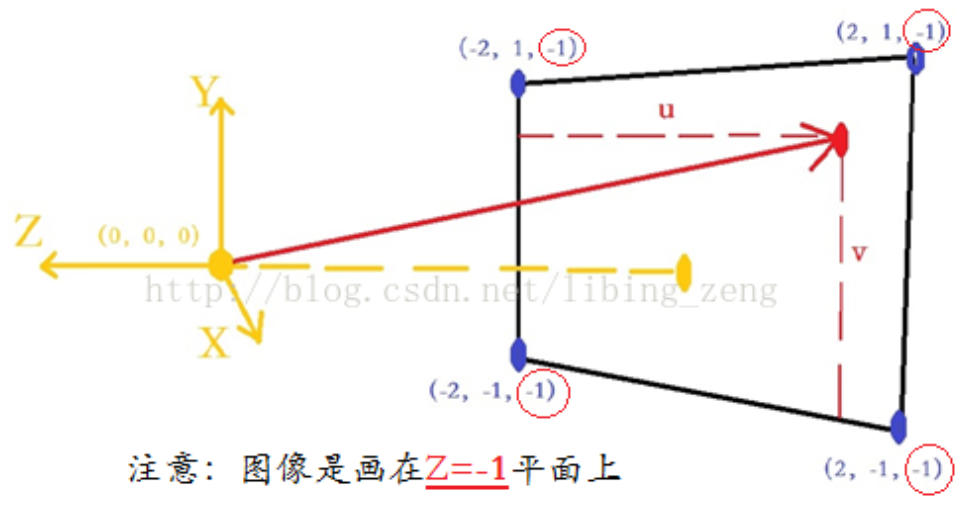
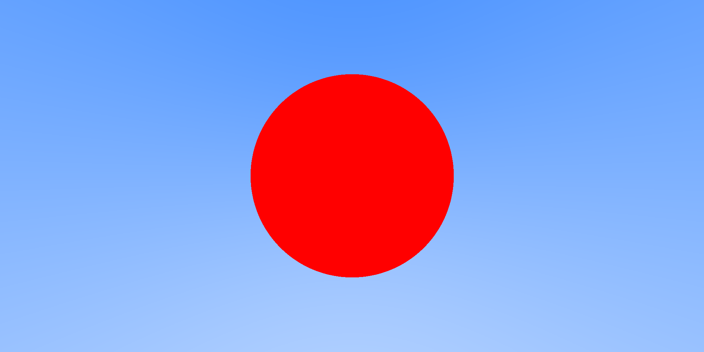
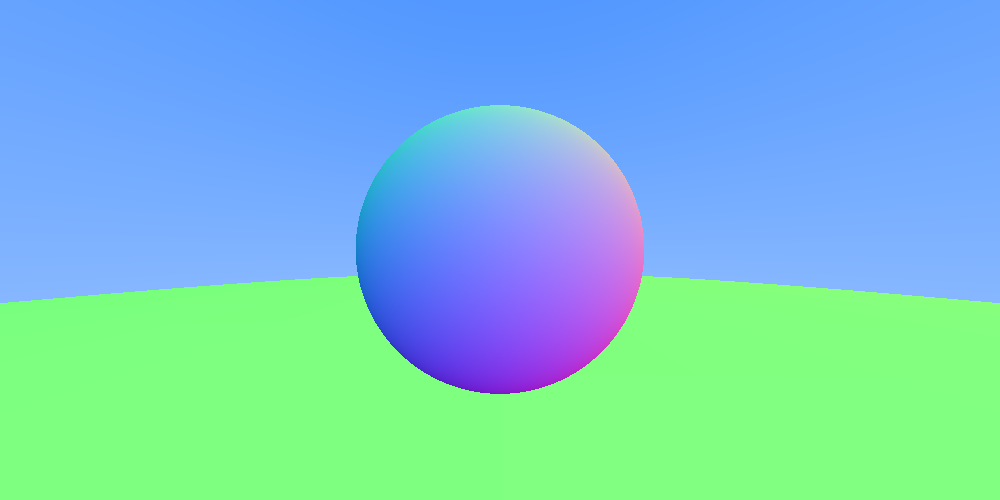

实验室师兄师姐和RayTracing相关各路大佬都推荐入门《RayTracing in One Weekend》这本小册子
vec3类解读 类体内 1 2 3 inline float x()const{ return e[0] }
类体内的函数x()
const:表示该函数不修改类对象。
inline:表示该函数在程序中每个调用点上被内联展开。
1 2 3 inline const vec3& opearator+()const{ return *this; }
类体内定义成员函数operator+()。
operator+()：操作符重载。
&：表示函数返回的是引用类型，此处表示返回的是一个vec3对象的引用。
const（左边这个）：表示函数返回不可被修改，此处表示返回的vec3对象的引用不可被修改。
const（右边这个）：表示该函数不修改类对象。
1 inline vec3& operator+=(const vec3&v2);
类体内声明成员函数operator+=()。
&（左边这个）：函数返回引用类型。当函数返回引用类型时，没有复制返回值。相反，返回的是对象本身。
&（右边这个）：形参是引用类型。当把参数声明为引用时，传递的是形参本身。此时不需要将形参的值拷贝（赋值）给实参，可以直接操纵形参。和指针类似。
类体外： 1 2 3 4 5 6 inline const vec3& opearator+=(const vec3 &v){ e[0]=v.e[0]; e[1]=v.e[1]; e[2]=v.e[2]; return *this; }
类体外定义operator+=函数
vec3::：表示类体外定义的operator+=()是vec3类的成员函数。“::”是域解析操作符。表示某个成员属于某个类，某个类的某个成员。
this：指向被调用对象的指针。
*this：由于函数定义的函数返回是引用类型，即返回的不是值或者指针，而是对象本身。所以，此处需要return *this来返回对象本身，而不是return this（返回的是指针）。
如何通过RayTracing 画第一张图 代码分析： ray类(ray.h)：
1 2 3 4 5 6 7 8 9 10 11 12 13 14 15 #ifndef RAY_H #define RAY_H #include "vec3.h" class ray{ public: ray() {} ray(const vec3& a, const vec3& b) { A = a; B = b; } vec3 orgin() const { return A; } vec3 direction() const { return B; } vec3 point_at_parameter(float t) const { return A + t*B; } //已知t时，可以获得光线上该点的坐标（向量） vec3 A; vec3 B; }; #endif // RAY_H
ray类中其实主要是定义两个向量：
1 2 3 4 5 6 7 8 9 10 11 12 13 14 15 16 17 18 19 20 21 22 23 24 25 26 27 28 29 30 31 32 33 34 35 36 37 38 39 40 41 42 43 44 45 46 47 48 49 50 51 52 53 #define STB_IMAGE_IMPLEMENTATION #include "stb_image.h" #define STB_IMAGE_WRITE_IMPLEMENTATION #include "stb_image_write.h" #include <iostream> #include "ray.h" using namespace std; vec3 color(const ray&r){ //对方向向量进行标准化。 vec3 unit_direction = unit_vector(r.direction()); //标准化之后的y值在[-1,1]中 y+1在[0,2]中0.5*(y+1)在[0,1]中 float t = 0.5*(unit_direction.y() + 1.0); //linear-blend 线性混合 //t=0时，color=vec3(1,1,1)，乘以255后对应的RGB为（255，255，255） //t=1时，color=vec3(0,0.4,0)，乘以255后对应的RGB为（0，102，0） //如上两个颜色分别对应着白色和深绿色 //画面颜色=(1-t)*白色+ t*深绿色，即画面颜色为白色和深绿色（沿着Y方向）的线性插值的结果。 //如果要换成X或者Z方向，将上面的.y()改成.x()或者.z()即可。若要换其他颜色，设置对应的RGB值即可。 return (1.0 - t)*vec3(1.0, 1.0, 1.0)+t*vec3(0,0.4,0);//表征颜色的三维向量(rgb) (0,0.4,0)为深绿色 } int main(){ int nx = 1980; int ny = 1080; int channel = 3;//RGB三通道 //字符数组保存图像数据 unsigned char *data = new unsigned char[nx*ny*channel];s //camera相关数据 vec3 lower_left_corner(-2.0, -1.0, -1.0); // 左下角 vec3 horizontal(4.0, 0.0, 0.0); // 横轴 vec3 vertical(0.0, 2.0, 0.0); // 竖轴 vec3 origin(0.0, 0.0, 0.0); // eye for (int j = ny - 1; j >= 0; j--){ for (int i = 0; i < nx; i++){ float u = float(i) / float(nx); float v = float(j) / float(ny); /*由画面中每个像素点在画面中的相对位置每个像素点对应的光线的方向向量从而确定画面的范围/大小。（完成第一步）*/ ray r(origin, lower_left_corner + u*horizontal + v*vertical); //根据光线对每一个像素点上色。（完成第二步） vec3 col = color(r); //写入图像数据 data[(ny - j - 1)*nx * 3 + 3 * i] = int(255 * col[0]); data[(ny - j - 1)*nx * 3 + 3 * i+1] = int(255 * col[1]); data[(ny - j - 1)*nx * 3 + 3 * i+2] = int(255 * col[2]); } cout << (ny - j)/float(ny)*100.0f << "%\n"; } stbi_write_png("Render_Chapter3_test.png",nx,ny,channel,data,0); cout << "完成渲染"; system("PAUSE"); return 0; }
原理分析： 光线起点（也就是eye或者camera）固定的情况下，光线的方向向量的变动范围即形成光线束。光线束即是eye或者camera看到画面。
所以，如果我们要通过光线追踪来画图的话，只需要做两件事情：确定光线的方向向量的活动范围函数，从而确定画面的范围、大小（一条光线对应这画面上的一个像素点）。 对每一条光线（像素点）设置颜色，（高质量图的每个像素点上可能对应多个采样）从而确定画面上的内容。
如下图，光线的起点为（0，0，0），要求在黑框内作图（即光线和黑框平面的交点落在黑框内）

[image]
同时我们需要对相机和人眼进行设置：
1 2 3 4 5 //camera类构造函数中进行初始化 lower_left_corner = vec3(-2.0, -1.0, -1.0); // 左下角 horizontal = vec3(4.0, 0.0, 0.0); // 横轴 vertical = vec3(0.0, 2.0, 0.0); // 竖轴 origin = vec3(0.0, 0.0, 0.0); // eye
由上图可得：交点坐标可以表示为向量：lower_left_corner + uhorizontal + v vertical
1 2 3 ray get_ray(float u, float v) { return ray(origin, lower_left_corner + u*horizontal + v*vertical); }
由于：每个交点的u，v的值即为该像素点在整个画面中的位置。
结果展示： （白色、深绿色沿着Y轴线性插值）
[结果展示]
如何通过RayTracing画球 Tips 当然这个球是画在之前的背景图上。问题转化为找光线和球的交点。 设置光线和球交点的颜色。 一张图遍历像素点，逐个像素点画出来的。一个光线代表着一个像素点。此处和球有交点的光线对应的像素点就设置成球的颜色 ）
推导过程 我们已知球心为（a,b,c）的球的表达式可以表示为：
代码分析 main.cpp
1 2 //遍历每个像素的for循环中 ray r(origin, lower_left_corner + u*horizontal + v*vertical);
确定颜色:
1 2 3 //ray r 返回的颜色值 //三维向量col保存RGB三个通道的值 vec3 col = color(r);
在main()中调用了color(const ray&r)方法
1 2 3 4 5 6 7 8 9 10 11 12 //通过ray返回的颜色，决定每个pixel的颜色值 //if有交点，返回小球的颜色 //else无交点，返回背景的颜色 vec3 color(const ray &r){ if (hit_sphere(vec3(0, 0, -1), 0.5, r)){ return vec3(1, 0, 0); } vec3 unit_direction = unit_vector(r.direction()); //一种根据ray的方向向量的y轴进行线性混合的背景渲染 float t = (0.5*unit_direction.y() + 1.0); return (1.0 - t)*vec3(1.0, 1.0, 1.0) + t*vec3(0.5, 0.7, 1.0); }
在color()中调用了hit_sphere(vec3 center,float radius,ray &r)方法
如果有交点，返回交点颜色
如果没有交点，则返回背景色
结果展示： （通过增加x,y两轴的采样像素个数，提高了图像的质量）

[结果展示]
Visualize The Normal With a Color Map 如何可视化球的法向量
1 2 3 4 5 6 7 8 9 10 11 12 13 vec3 color(const ray& r) { // 如果 ray r 击中球体的话，返回交点的 t float t = hit_sphere(vec3(0, 0, -1), 0.5, r); if (t > 0.0) { // 计算交点处的法线，并把法线进行可视化 vec3 N = unit_vector(r.point_at_parameter(t) - vec3(0, 0, -1)); // P - C return 0.5*vec3(N.x() + 1, N.y() + 1, N.z() + 1); } // 否则，计算背景色并返回 vec3 unit_direction = unit_vector(r.direction()); t = (0.5 * unit_direction.y() + 1.0); return (1.0 - t) * vec3(1.0, 1.0, 1.0) + t * vec3(0.5, 0.7, 1.0); }
结果展示：
[结果展示]
如何通过RayTracing画多个球 Tips： 画多个球方式和画一个球的方式是一样的第一步：求交， 一条光线和N个球的交点可能有02N个。第二步：设置颜色， 这个和画一个球时一样，设置为球在该点的单位法向量的色彩表映射值。不会~不会。
代码分析： main.cpp中：场景中包含了多个hitable实例（物体）
1 2 3 4 5 // 场景相关 hitable *list[2]; list[0] = new sphere(vec3(0, 0, -1), 0.5); list[1] = new sphere(vec3(0, -100.5, -1), 100); hitable *world = new hitable_list(list, 2);
2.遍历图片每一个piexl
1 2 //遍历每个像素的for循环中 ray r(origin, lower_left_corner + u*horizontal + v*vertical);
确定颜色:
1 2 // 计算 ray r 射入场景 world 后，返回的颜色 vec3 col = color(r, world);
这其中main()中调用了color(const ray&r,hitable *world)方法
1 2 3 4 5 6 7 8 9 10 11 12 13 vec3 color(const ray& r, hitable *world) { hit_record rec; if (world->hit(r, 0.0, FLT_MAX, rec)) { // 若 ray 交到场景中任意 object，计算其交点法线并可视化 return 0.5*vec3(rec.normal.x() + 1, rec.normal.y() + 1, rec.normal.z() + 1); } else { // 否则，计算背景色并返回 vec3 unit_direction = unit_vector(r.direction());//计算可得：交点向量=方向向量 float t = (0.5 * unit_direction.y() + 1.0); return (1.0 - t) * vec3(1.0, 1.0, 1.0) + t * vec3(0.5, 0.7, 1.0); } }
在color方法中
1 2 3 4 5 6 7 8 9 10 11 12 13 14 bool hitable_list::hit(const ray& r, float t_min, float t_max, hit_record& rec) const { hit_record temp_rec; bool hit_anything = false; /*如果光线撞上了球。N个球，可能有2N撞点，到底哪一个撞点是有效的呢？可以被最终设置颜色呢？原则是：找出最近的撞点。*/ double closest_so_far = t_max; for (int i = 0; i < list_size; i++) { if (list[i]->hit(r, t_min, closest_so_far, temp_rec)) { hit_anything = true; closest_so_far = temp_rec.t; rec = temp_rec; } } return hit_anything; }
由此可见，hitable_list的hit方法遍历了场景中的sphere对象(继承于hitable)，这些对象又调用了sphere中的hit方法
1 2 3 4 5 6 7 8 9 10 11 12 13 14 15 16 17 18 19 20 21 22 23 24 25 26 bool sphere::hit(const ray& r, float t_min, float t_max, hit_record& rec) const { vec3 A_C = r.origin() - center; vec3 B = r.direction(); float a = dot(B, B); float b = dot(A_C, B); float c = dot(A_C, A_C) - radius * radius; float discriminant = b * b - a * c; if (discriminant > 0) { float temp = (-b - sqrt(discriminant)) / a; if (temp < t_max && temp > t_min) { rec.t = temp; rec.p = r.point_at_parameter(rec.t); rec.normal = (rec.p - center) / radius; //考虑光线交一个球时，优先取的是大于零的较小的那个根 return true; } temp = (-b + sqrt(discriminant)) / a; if (temp < t_max && temp > t_min) { rec.t = temp; rec.p = r.point_at_parameter(rec.t); rec.normal = (rec.p - center) / radius; return true; } } return false; }
对于颜色设置的过程可以总结如下：
1 2 3 4 5 6 for (int i = 0; i < list_size; i++) {//遍历所有球 if (list[i]->hit(r, t_min, closest_so_far, temp_rec)) {//temp_rec中保存对于每个球而言，较小的t值 hit_anything = true; closest_so_far = temp_rec.t;//更新变量t,选出最小t rec = temp_rec; }
结果展示：

[结果展示]
如何对RayTracing图形消锯齿 锯齿出现原因： 之前的图是每个像素点设置一个颜色值，相当于将像素中心位置的颜色设置给了整个像素。所以，如果两个像素点中心位置的颜色值相差比较大时，这两个像素点就会产生清晰的边界。
解决方式： 增加采样精度
1 2 3 4 5 6 7 8 9 10 // 采样ns 次 for (int k = 0; k < ns; k++) { float u = float(i + (rand() % 100 / float(100))) / float(nx); float v = float(j + (rand() % 100 / float(100)) )/ float(ny); // 确定 ray r ray r = cam.get_ray(u, v); // 累加 ray r 射入场景 world 后，返回的颜色 col += color(r, world); } col /= float(ns);//平均处理
模拟RayTracing中漫反射材质（diffuse material） 分析 前面画一个球时，球体的颜色设置为红色；
首先，我们需要明晰：漫反射材质不自发光，只吸收和反射环境光（反射光的方向是随机的）
既然已经知道漫射材料球体的颜色和反射次数有关，那么怎么获得光线反射次数呢；

{kind=link}
{kind=link}
{kind=link}
{kind=link}
{kind=link}